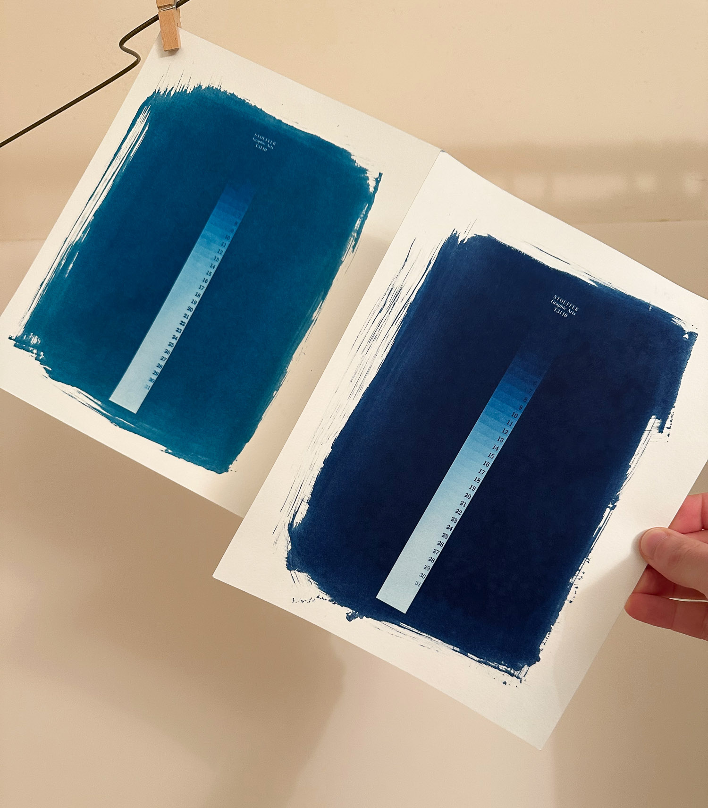
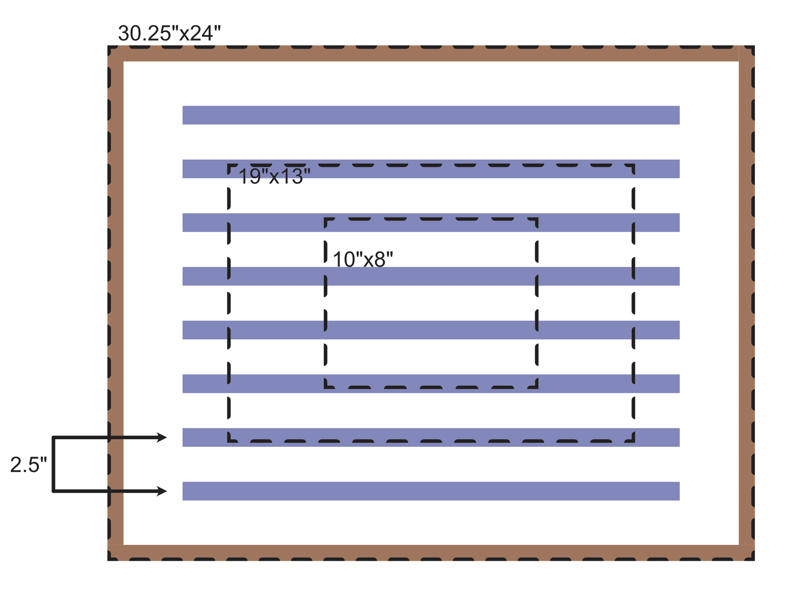
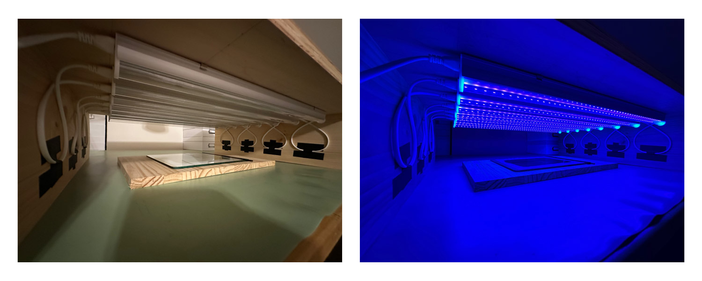
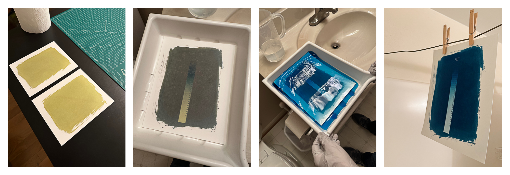
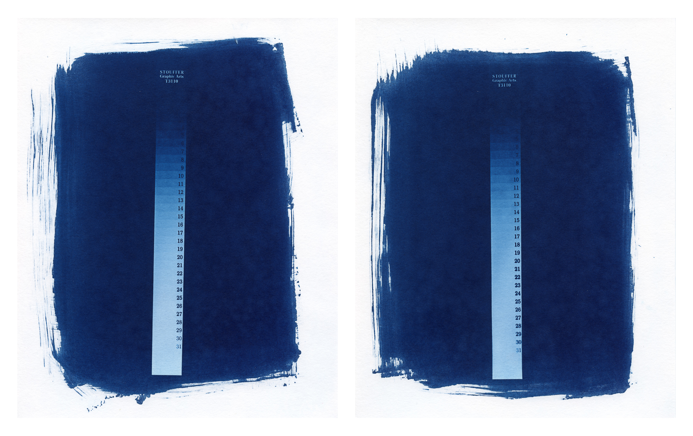
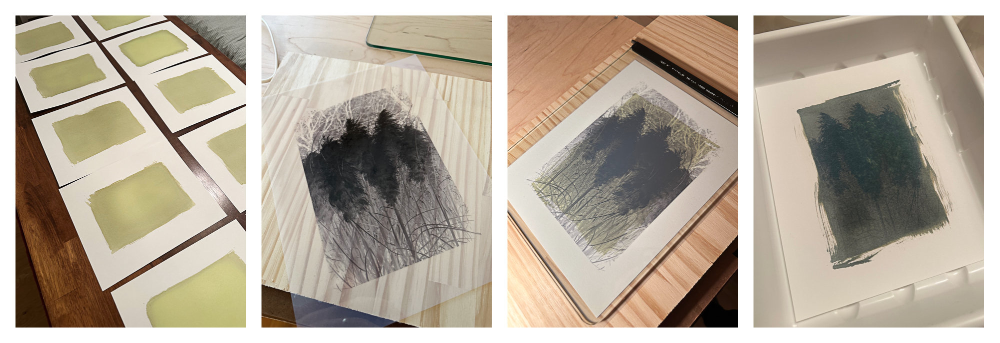
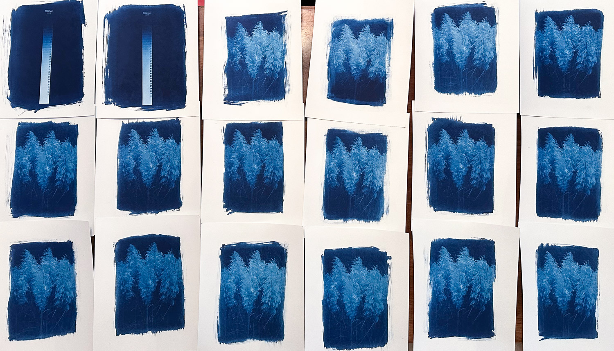

First Cyanotype Prints


I was recently asked to participate in the 2025-2026 New City Arts Artist Exchange and decided to use this opportunity to learn how to print cyanotypes.
Background
I have been developing my own black and white film (35mm and 120) at home since 2017. Typically I scan that film and edit it on a computer. At the beginning of 2020, I purchased an enlarger and built a darkroom in one of our bathrooms and learned how to print silver gelatin prints. Printing in the darkroom is fun, but takes time and space (literally one of our bathrooms). Because of this, I don’t print much in the darkroom and still mainly scan my developed film. I have been curious about the cyanotype process for a while, but never made the time to learn.
Education and Equipment
I learned most of the technical information about the cyanotype process from the wonderful book by Christina Z. Anderson: Cyanotype: The Blueprint in Contemporary Practice.
John Berry, a local photographer, also shared technical information and recommendations and answered several questions I had as I learned about cyanotypes.
What I used:
- 8" x 10" darkroom tray to wash the prints
- 45ml graduate to measure the chemicals
- Two 4ml eye droppers to prevent chemical cross-contamination
- 1000ml graduated beaker for measuring water for the wash baths
- 1/2 teaspoon for measuring the citric acid
- Foam brush for painting the chemicals on the paper
- Plastic cup for mixed chemicals
- Clothes line and clothes pins to hang prints to dry
- Darkroom contact printing glass
- Bergger Cyanotype chemicals, classic cyanotype with Solutions A and B
- Citric Acid
- Stouffer 31-Step Wedge for determining exposure time
- Hahnemühle Platinum Rag 300gsm 8" x 10" paper
- Fixxons Digital Negative Contact Print Film
- Custom-built UV light box
Making the UV light box
I created a wood box to hold eight Barrina UV LED Blacklight bars (the 2 foot size). They have cables that allow you to connect up to twelve lights together. The box I built is large enough to print 16 " x 20" prints.




Making the first test prints
I mixed a small amount of chemicals (equal parts Solution A and Solution B) and coated two sheets of Hahnemühle Platinum Rag paper. I then did two 45-minute test exposures using the Stouffer 31-Step Wedge to determine the ideal exposure time. For one of the tests, I raised the paper closer to the UV lights to see if that would reduce the exposure time. It did not reduce the exposure time and potentially introduced some loss of detail in the small text of the 31-Step Wedge, so I decided to just keep future exposures on a single piece of plywood. Based on the test exposures, I determined my exposure time should be around 36 minutes.




Creating the final prints
For the artist exchange I needed to create 14 identical pieces to share. I decided to create 16 prints so I could keep my first cyanotype (sentimental value) and the last cyanotype print of the run (so I could explore toning in the future).
I selected the photograph I wanted to print as a cyanotype, edited the photograph in a way that I thought would print well, converted it to black and white, applied a cyanotype levels curve to reduce contrast, and printed it on the Fixxons transparency film (guidance for this process is in Christina Z. Anderson’s book).
I decided to make the negative larger than the coated area of the paper so the edges of the negative would not be visible in the final print. I wanted the subject of the photograph to fade into the brush strokes at the edge of the coated area. I also decided to show the brush strokes on the edges of the coated area instead of taping clean edges or coating the entire page as I wanted one to see that I painted each paper by hand. This also makes each print unique.


Artist Statement
The following is the artist statement that I wrote for the artist exchange:
In 2024, I completed a daily photography practice where I photographed and shared at least one digital photograph per day. I enjoy the process of film photography and decided to take one of the digital photographs from the 2024 project and bring it into the analog photography process through cyanotype printing. I turned the photograph into a digital negative, coated paper with cyanotype chemicals, exposed the negative for 36 minutes under UV light, and washed the print in a slightly acidic water bath, followed by more plain water washes (around 15-20 minutes of total washing). Unplanned, I later discovered that the photograph I selected was from 16 September 2024, my Maw Maw’s birthday (my grandmother), who recently passed away. She always supported and encouraged me in my photography.
The first print


